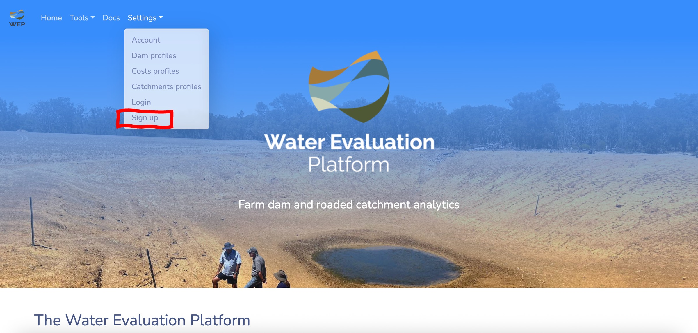

Getting started
This tutorial demonstrates how to get up and running using the Water Evaluation Platform to simulate dam performance and to perform a suite of analytics that guide optimising dam and catchments to meet water demand.
To get started, head to https://waterevaluationplatform.app/dam.
In this tutorial, we’ll simulate the effect of adding a 0.45 ha plastic PVC grain tarp catchment to a dam that provides drinking water for sheep in the summer months. In January, February and March, 800 sheep drink from the dam. The dam is situated near Merredin, Western Australia. This is a illustrative scenario used to demonstrate WEP features.
Create a WEP account
To access the full range of WEP features, sign up for an account. Creating an account lets you save the results of analyses to view them at a later date and to create custom dam, catchment and cost profiles to reuse across analysis modes.
To create a WEP account head to Settings in the navbar and select Sign up.

Then fill out the sign up form. You can find more information about WEP accounts and how your data is stored and used in the Accounts section of the user guide.
Create a dam profile
Dam profiles describe the demand placed on dam water. You can configure dam profiles to capture livestock drinking requirements, spray requirements, irrigation water requirements and other uses.
If your dam is one part of the non-potable water supply mix, you can also configure other water supplies, such as bores, to add to the dam water.
To create a dam profile, go to Settings in the navbar and select dam profiles. You then need to give the dam profile a name and then fill out the web form describing the demand placed on the dam water. Click on each of the sections to bring up the form widgets. Here, we only have 800 sheep using the dam for drinking in January, February and March so we add that to the form. WEP will use daily temperature data to compute a drinking rate for these sheep for each day that a dam simulation runs for.
Head to the user guide to find more details on configuring profiles.
Create a catchment profile
You can create custom catchment profiles to describe the runoff generating capacity of a roaded or natural catchment that drains into your dam. Currently, in WEP there two types of catchment models:
- A runoff threshold-style catchment model that generates runoff for all rain events greater than a threshold.
- Bare earth and vegetated catchment models that keep a memory of soil moisture and generate runoff when the soil is saturated.
With both types of catchment models, depending on how you configure the profile, you can simulate a range of catchments including bitumen, plastic, bare earth with various soil types, and natural catchments.
A range of catchment profiles, broadly representative of catchments found across south west Western Australia, are pre-loaded in the app. These are a good place to start if you are unsure of the properties of the catchment you want to simulate or if you want to explore how runoff generation, and subsequent dam water supply, vary with different catchment surfaces.
To create a catchment profile, go to Settings in the navbar and select Catchment profiles. You then need to fill out the web form in the sidebar with values that represent the catchment you wish to model and its capacity to generate runoff.
Here, we’ll create a catchment profile to simulate a PVC grain tarp surface. First, we need to locate the catchment on the landscape (this step is required so in future iterations of the tool we can provide functionality to look up catchment properties from geospatial layers). The catchment has a runoff threshold of 1 mm (all rainfall greater than 1 mm has potential to runoff) and a runoff coefficient of 70 % (the % of runoff that reaches the dam). Enter these values in the form widgets in the sidebar and then click Save catchment profile. This will save the catchment profile to your account.
To find out more information about creating catchment profiles in WEP head to the user guide.
Create a costs profile
A cost profile specifies the costs to build and maintain a dam and catchment.
Some pre-loaded indicative costs are provided in the application which are derived from DPIRD’s Options for Farm Water Supply in a Volatile, Drying Climate report. These provide default costs for bare earth roaded catchments, plastic catchments and bitumen catchments. When you use analysis tools in the app you will see them loaded with a format Roaded bare earth (C1) and natural (C2) (see figure below too). This means the first catchment (C1) will use the default roaded bare earth cost profile and the second catchment (C2) will use the default natural cost profile.
It is recommended that you create your own custom cost profiles to more accurately reflect the costs you would face in building and maintaining a dam and roaded catchment.
Chat to contractors for current indicative construction costs. You can also create different cost profiles to explore the cost-benefit of different dam and catchment technologies and their capacity to provide a reliable water supply.
Here, we’ll create a custom cost profile for building and constructing a plastic PVC tarp catchment using figures obtained from the Water Smart Dams project (for catchment 1) and sensible default values for a natural catchment (catchment 2).
To create a cost profile, go to Settings in the navbar and select Costs profiles and fill out the form with the following values.
- Costs profile name: Getting started demo (plastic PVC)
- Catchment 1 construction costs ($ / ha): 29,400
- Catchment 1 years of operation: 7
- Catchment 1 maintenance multiplier ($ / ha): 769
- Catchment 2 construction costs ($ / ha): 0
- Catchment 2 years of operation: 50
- Catchment 2 maintenance multiplier ($ / ha): 0
- Silt trap and piped inlet costs ($): 2000
- Dam construction costs ($ / m³): 3
- Dam site drilling costs ($): 200
- Cost to line dam ($ / m²): 12
- Evaporation treatment cover cost ($ / m²): 12.5
- Interest rate (%): 0.05
For more details on creating cost profiles, head to the user-guide.
Select an analysis mode
Here, we’ll run a dam and catchment simulation to explore the reliability of the dam near Merredin with a plastic PVC tarp catchment installed. The dam has to provide drinking water for 800 sheep through summer.
We can select the Dam and catchment analysis mode from the Tools in the navbar or scrolling down on the app landing page.
Configure your analysis
All of the WEP analysis modes have similar user interfaces to configure simulations and analyses. There are form widgets in the left hand sidebar and a map display to locate the dam on the map and to draw out roaded catchments if required.
To start, you can use the search tool in the top right of the map display to navigate the map to the region we’re working in. Once we’re broadly in the right place, we can pan and zoom on the map to locate the dam. As you click on the map you will see a blue marker, centre this on the dam. This marker helps you stay oriented on the map and is also the location that’s used to fetch weather data to drive the simulation.
Next, we need to configure the simulation by filling in the form fields on the left hand sidebar. Use the following values:
- Sim configuration: Leave this as
New configas we have not got pre-saved values for this simulation to use here. - Name: Give your simulation a descriptive name (e.g.
Merredin plastic PVC catchment). - Dam profile: Select a dam profile; this should be the one we created earlier which was called
Getting started demo. - Dam costs: Select a costs profile, this should be the one we created earlier which was called
Getting started demo (plastic PVC). - Simulation duration: Pick a suitable date range that you want to simulate dam performance for using the calendar widgets. A longer period (e.g. 20 years) generally gives a better indication of dam’s reliability.
- Dam location: Click on the map to locate the dam. Make sure the blue marker is in the centre of the dam on the map display. As you move the marker around the map you will see the latitude and longitude values in the form update.
- Dam morphometry: Use the sliders to specify the dam morphometry to set the surface area and volume of the dam. This is a square dam has a surface length of
55 m, a depth of5 m, and slope of33 %. - Dam water conditions: Set the starting water level for the dam and check the box if the dam is leaky. We’re starting the simulation in January where the dam has lost some water from evaporation, but is not at its driest point. Therefore, set the starting water level to be
60 %. The dam is not leaky.
- Catchment 1: Use the map drawing tools to delineate the plastic PVC tarp catchment on the map as catchment 1. Under Catchment 1 click on the draw button to bring up the drawing tools and then draw out the catchment on the map. Use the dropdown list the select the catchment type as Getting started demo.
- Catchment 2: Under Catchment 2 set 30 ha of natural catchment draining into the dam. Use the default natural catchment properties here. We do not need to draw this catchment on the map, we can also just enter the catchment area if we know it.
Run your analysis
Now, we’re ready to run the simulation. Click Run simulation at the bottom of the form.
Explore your results
Once the simulation has finished the results will be displayed as a series of report cards and interactive charts and visualisations.
On the left sidebar a summary of simulation results are reported. In particular, the reliability of the dam in terms of the percentage of months the dam met water demand is reported. You can scroll down to view a summary of the costs to build and maintain this dam and catchment.
The main panel presents a series of interactive charts providing more details about your simulation results.
You can toggle between three Analysis views that present different interactive charts displaying your simulation results.
The Time series view presents time series plots of dam water levels, volume, inflows from the catchment, and evaporation losses.
The Dam performance view presents heatmaps showing year by month breakdowns of dam water levels, catchment runoff, evaporation losses, and daily counts of dam failures.
The Water demand view presents heatmaps showing year by month break downs of water demand from livestock drinking, spray programs, irrigation, and other water uses.
Accounts
Once your simulation has finished it will be saved to your account. You can access your account via the Settings in the navbar.
You can see a list of saved simulations and analyses and you can click the load sim button to reload the results dashboard.

Under the Projects dropdown list you can switch through different analysis modes to see saved results.
Under the Profiles dropdown list you can bring up summaries of dam, catchment and cost profiles saved to your account.